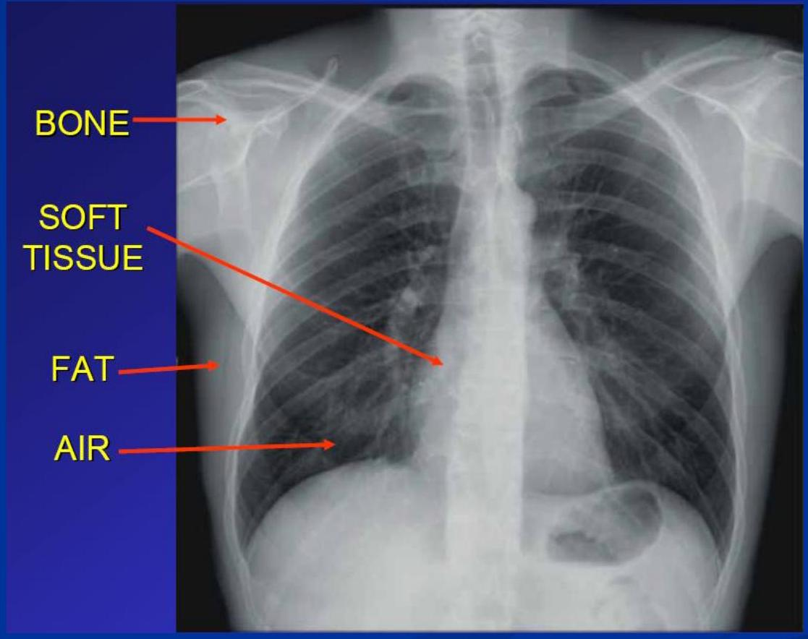

DIAGNOSTIC IMAGING OVERVIEW
DR A. AYWAK Senior lecturer DDIRM University of Nairobi
Introduction
- Diagnostic Imaging is the study of healthy and diseased organs and tissues by imaging. The interventional branch provides treatment to certain disease processes.
- The information acquired makes it a primary tool in clinical medicine at primary, secondary and tertiary care.
- The images are an extension of patient examination.
- The practicing physician must know from physical examination when to opt for an imaging Test, which imaging modality to order and its contribution to patient management.
Introduction cont..
Indeed every speciality of medicine utilizes imaging at one point or other to
- help establish a diagnosis
- assess disease extend
- and more often than not, provide information on prognosis especially in cases of malignancies and their spread to other areas.
Introduction cont.
As a student in your clinical years of study you should be able to answer the following questions in every given clinical case.
- Does the patient require an imaging examination?
- If so which imaging modality will be most suitable and cost effective.
- What is the selected imaging modality likely to confirm or exclude
Imaging in medicine
Imaging joined the practice of medicine with the discovery of X-rays by Roentgen in 1895

Wilhelm Conrad Roentgen 1845-1923
- discovered X-rays November 8, 1895
- Won Nobel Prize in 1901
- Jan. 13, 1896 - Images needle in patient's hand - X-ray used presurgicaly